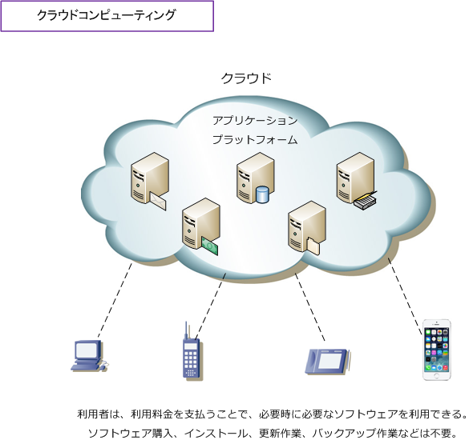
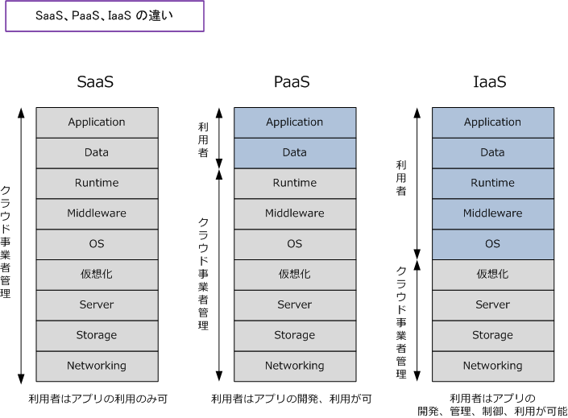
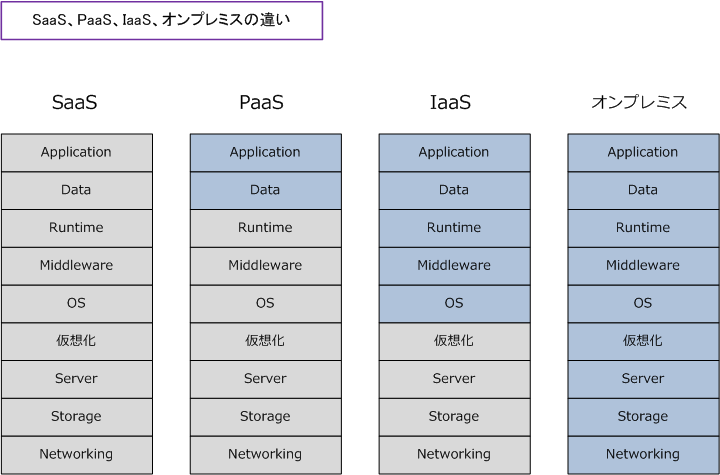

Cloud computing
クラウドコンピューティングとは
クラウドコンピューティングとは、コンピュータネットワークをベースとしたコンピュータ資源の利用形態 の1つであり、クラウドと呼ばれています。クラウドは、自身のPCで管理して利用していたソフトウェアや データなどを、インターネットなどを介してサービスの形で必要に応じて利用する方式です。
例えば、iPhoneを利用している方は「iCloud」を利用しているかと思いますが、これはApple社が提供する クラウドコンピューティングを利用していることになります。クラウドの技術はそれだけ身近なものです。 なお、クラウドコンピューティングにより提供されるサービスのことを「 クラウドサービス 」と言います。

クラウドのサービスの「事業者」は大規模DCに多数のサーバを導入して、「利用者」がインターネットを 介してソフトウェアやデータを利用できる保管領域を確保するための大規模なシステムを構築しています。 利用者ごとに一意のサーバを提供する必要があるサービスでは、事業者はクラウドコンピューティングで 導入するサーバに対して、一般的にサーバ仮想化技術を実装して、そのサービスの要求を実現しています。
利用者は、利用料金を支払うことで、ソフトウェア購入、インストール、更新作業、作成したファイルの バックアップ作業などが不要となり、必要な時に必要なソフトウェアを利用できます。クラウドにより提供 されるサービスにはオフィスソフト、メールソフト、オンラインストレージ、データベース等があります。
例えばクラウドベースのDNSサービス（例 Google Cloud DNS）では、DNSにおけるゾーンを作成すれば 自動的にSOAレコードとNSレコードが生成されます。そして、提供される複数のDNSサーバ間で自動的に ゾーン情報が同期されます。また、対障害性の面でも可用性に優れたプラットフォーム上にDNSサービスが 構築されることから問題はありません。設定もWebベースのGUIであり非常に分かりやすい。このように、 DNSサーバの運用を自社管理からクラウドベースに移行することによって運用管理の手間を抑えられます。
クラウドコンピューティングの技術による分類
クラウドコンピューティングにより提供するサービスは、その利用形態により以下の3種類に分類できます。 SaaS、PaaS、IaaSは総称して「 XaaS 」と呼ぶ場合があります。
SaaS（Software as a Service）： サース
インターネット経由でソフトウェアパッケージを提供する利用形態。利用者はソフトウェアを購入する必要が なく利用期間や利用人数に応じて、クラウドサービスを提供する事業者に料金を支払います。SaaSで提供する サービスには、Google社のGoogle Apps、Microsoft社のMicrosoft Online Services、Salesforce.com社の Salesforceなどがあります。
PaaS（Platform as a Service）： パース
インターネット経由でアプリケーション実行用のプラットフォームを提供する利用形態。利用者がアプリを 開発して稼働させるために必要な開発環境となるプラットフォームを事業者は提供します。PaaSで提供する サービスには、アマゾン社のAWS（Amazon Web Services）のAmazon S3やAmazon DynamoDB、 Salesforce.com社のForce.comプラットフォーム、Google社のGoogle App Engine、AppScale、MS社の Windows Azureなどがあります。
IaaS（Infrastructure as a Service）： アイアース
インターネット経由でハードウェアリソース（CPU/メモリ/ストレージ）のITインフラを提供する利用形態。 より正確に説明すると、サーバ仮想化技術を利用してハードウェアリソース（CPU/メモリ/ストレージ）の ITインフラを提供します。IaaSを提供するサービスにはAmazon Web ServicesのAmazon EC2があります。

※ Runtime：プログラムの実行時に必要となるライブラリなどのソフトウェアの部品のこと。 ※ Middleware：OSとアプリケーションソフトの中間に位置し、様々なソフトウェアから共通して利用される機能を提供するもの。
なお、クラウドサービスを利用せず情報システム企業が「自社で保有して、自社の設備で運用」することを オンプレミスと言います。オンプレミスでは、自前で構築するため要望に合わせて柔軟にカスタマイズ可能 であり、社内システムとの連携や統合などの自由度が高いメリットがありますが、ネットワーク機器の導入、 サーバ機器の導入、ソフトウェアライセンスの購入が必要であり、初期費用が高額であることがデメリット。

クラウドコンピューティングのメリットは以下の通りです。※ クラウドサービスにSaaS、PaaS、IaaSの どのサービスを選択するかによって、以下の内容はメリットにならない場合もあります。
・ コスト削減 ⇒ クラウドの場合は初期費用が無料であることが多く、低コストで利用開始することができます。また、 ネットワーク機器、サーバ機器、ソフトウェアライセンスなどの購入費用がかかりません。
・ インフラの調達期間が短納期 ⇒ 利用登録が完了すれば利用できます。サーバ台数の増減やスペック変更などがWeb上などから行えます。
・ システムの柔軟性 ⇒ 必要なサービスを必要な時に選択・利用できる形態であり、システムの柔軟性が高くなります。
・ 運用管理の負担の軽減 ⇒ 利用者はソフトウェアのインストール、アプリのアップデート作業が必要なくなるだけではなくて、 データ管理やバックアップ作業も不要となり、利用者の運用管理の負担を軽減します。
・ BCP（事業継続計画）対策 ⇒ データセンター利用による対災害性、高セキュリティを実現するだけでなく、アウトソーシングにより システム保守の品質が向上します。また、仮想化による冗長化機能によって、ビジネス継続性が向上します。
サーバ仮想化 →